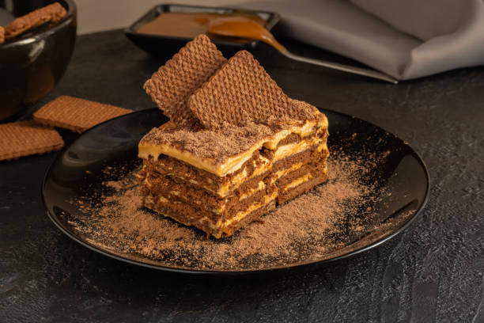

Chocotorta is a classical home dessert from Argentina. It's made from chocolate cookies called Chocolinas and dulce de leche mixed with cream cheese. It is super easy to make and it's a great cake to make with kids!
Chocolinas are thin chocolate cookies that come in big packages, they are mostly used for making desserts as they are pretty dry on their own. If you can't get this brand were you live, try to find cookies that are fairly thin and dry. To make the soft cake texture we are gonna soak the cookies in chocolate milk for a couple seconds before layering them onto the cake.
The filling of chocotorta is made out of mixing cream cheese and dulce de leche. Dulce de leche translates as "sweet of milk", it is made by cooking milk with sugar for a long time on a stove until it becomes this dark brown goop. It is one of the most iconic foods from argentinian culture and something that we could simply not live without. It is also the main ingredient of our cake, there's no possible sustitution for it im afraid, but given how popular argentinian culture has become in the past years, I don't expect it to be too hard to find some. In some other hispanic countries like Mexico, you can find something called cajeta, wich is very similar to dulce de leche, just be warned that the result may vary from the authentic if you use it, so do your best to try to find argentinian made dulce de leche. We are gonna mix it at about equal parts with cream cheese, of course you can try it out and decide wich of the two flavors you want to lean more into while mixing.
The process of assemling our cake is very simple. Take a chocolate cookie and soak it in cholate milk for a couple seconds and then make a layer of soaked cookies on the bottom of a tall square dish. Follow that with a layer of our filling that's a bit thicker than the cookie. Then, add another layer of wet cookies and continue the proces until you are out of ingredients, it's that simple! Top it with a final layer of cookies and leave it in the fridge to cool ideally over night.